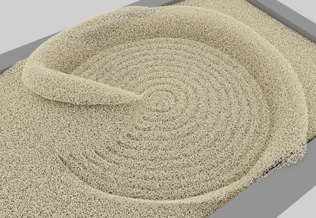

颗粒模拟包括固体材质的颗粒可以流动的场景。除了沙子和雪，颗粒框架还用于凝胶和橡胶。

可查看 Bifrost 浏览器中提供的示例图表，而不是从头开始构建 MPM 模拟图表。如果其中一个图表与您要实现的效果类似，可以导入该图表，然后根据需要对其进行调整，或者直接研究其工作方式。
对于沙子和雪，另一种替代方法是添加 basic_mpm_sand_graph 或 basic_mpm_snow_graph 节点，然后将其炸开以获取已完成一些基本连接和设置的图表。
设置颗粒模拟：
准备要用作适用于颗粒材质的发射器的网格，以及要用作碰撞对象的网格（包括用于容纳材质的容器（如果需要））。这些网格可以从场景中输入，也可以在图表中创建。为了获得最佳的结果，请执行以下操作：
将以下节点之一添加到图表，设置其参数，并将发射器网格的输出连接到其 geometry 输入。
source_mpm_sandsource_mpm_snowsource_mpm_gelsource_mpm_rubber请注意，默认情况下，源节点设置为在第 1 帧创建一次性发射，这适用于雪堆或沙滩等对象。如果您希望改为连续发射，请在源节点上禁用 use_end_frame。
对其他发射器重复上一步。可以在同一模拟中组合不同的材质。
将源节点的输出连接到 simulate_mpm 节点的 sources 端口。
将 mpm_solver_settings 节点的输出连接到 simulate_mpm 节点的 settings 端口，然后设置其特性。
将要用作障碍的网格连接到 collider 节点。与源一样，可以将多个几何体连接到单个 collider 节点，将多个 colliders 节点连接到 simulate_mpm 节点。例如，要生成足迹，地面上需要防止雪或沙子滑走的碰撞对象，行走的人也需要碰撞对象。
将 collider 节点的输出连接到 simulate_mpm 节点的 colliders 输入。
（可选）将影响节点（例如 wind_influence、turbulence_influence 或 ground_plane_influence）连接到 simulate_mpm 节点的 influences 输入。
此时，可以通过切换 simulate_mpm 节点上的 P（代理）或 D（诊断）标志，并从第一帧开始播放，来预览粒子流。根据需要调整模拟参数。
如果遇到碰撞问题（例如粒子在穿过碰撞对象时泄漏或碰撞发生偏移），请尝试将 collider 节点上的 method 设置为 Volume。这更加精确，但计算时间更长。您也可以尝试在 lag_colliders 节点上启用 mpm_solver_settings。
对于最终渲染，建议将粒子缓存到磁盘上的文件。渲染所需时间通常比模拟长，并且可以轻松恢复（与模拟不同）。有多种缓存方法，但下面提供了一些建议：
simulate_mpm 的 granular_particles 输出是一个数组（每种材质类型一个点对象），因此先将其连接到 split_points_by_material。将所需的每个输出（例如 sand_particles）连接到 erase_component_properties 节点，然后将其连接到图表顶层的 output 节点或连接到 terminal 节点。在这些最终连接上添加观察点以查看特性列表，并在 erase_component_properties 的 properties 参数中输入不希望缓存的任何特性。 erase_component_properties 的输出（如果不使用 erase_component_properties，则为 simulate_mpm 的 granular_particles 输出）连接到 file_cache 节点，并将其输出连接到图表顶层的 output 节点或连接到 terminal 节点。输入文件名和位置，将 file_cache 节点的 mode 设置为 Write Mode，然后从开始帧播放完整模拟。完成后，别忘了将 file_cache 节点的 mode 设置为 Read Mode。在某些情况下，尤其是进行凝胶或橡胶模拟时，您可能需要对输出划分网格。
points_to_volume，接着使用 volume_to_mesh。 points_to_volume 之前使用 set_geo_property 调整 point_size。smooth_voxel_property 调整体积特性 - 详细信息取决于您尝试模拟的内容以及所需的外观。下面介绍一些通过使用源节点上的参数模拟不同沙子和雪条件的技巧：
cohesion 控制颗粒粘在一起的强度，因此，要获得较湿的沙子或雪，可使用较高的值。friction。initial_firmness 控制其挤压程度。使用较低的值可获得轻盈、蓬松的雪。source_mpm_gel 节点上的 yield_stress 特性控制总体行为 - 值越大，凝胶将成束在一起并抵抗在剪切力作用下屈服的强度越大。